Why a distributed system cannot agree on what time it is, what it can agree on instead, and what each answer costs.
Understanding the problem
The concept of time is very different in a distributed system compared to a single machine. To understand the issue, we first have to look at how a single node maintains time.
Consider a single node, or a single instance of a server, in your system. Its clock is driven by a quartz oscillator that runs slightly fast or slow, so the server needs a way to keep itself in step with real-world physical time. To do this, it periodically queries a time server using NTP. Between those syncs the clock drifts, and if the machine is cut off from the network, the drift goes uncorrected and keeps accumulating. You see the same thing on your own devices, which occasionally need a sync to bring their time back in line. So we can conclude that there is always some gap between physical time and the time a server reports.
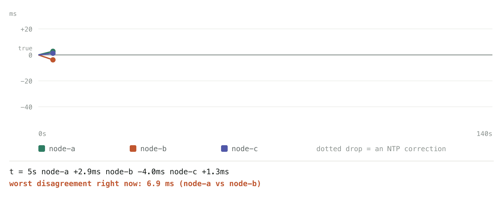
Now extrapolate that to many servers running in parallel. Each one drifts on its own and syncs on its own schedule, so at any given moment their clocks disagree with one another. This is not solved by keeping them online. Even when every server is syncing over NTP, the residual error between any two of them is typically in the tens of milliseconds, which is far larger than the gap between two events you might be trying to order. Cut a machine off from the network, or pause a virtual machine mid-request, and the disagreement grows further. This is why we need a notion of a clock that is not tied to physical time at all.
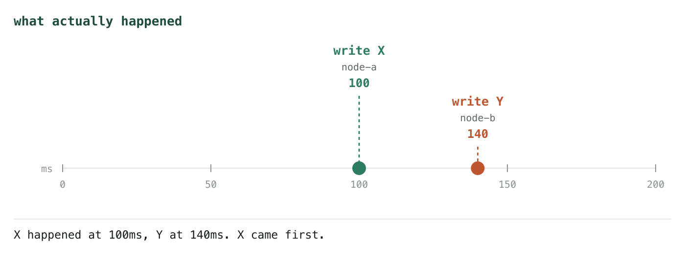
What we need instead is a scheme that can take two events and tell us which one happened before the other. Time in a distributed system is therefore a narrower idea than it is on a single machine. It is not about when something occurred, but about which events could have influenced which. Once you thread events together that way, "happened before" takes over the job the timestamp was doing, and it does it without any reference to a clock on the wall.
Simplifying the problem
This narrows the problem usefully. Everything we want from time in a distributed system now reduces to two questions.
The first is whether one event was caused by another, or whether the two were concurrent. This is the causality question, and it is the one that matters when two nodes have both acted on the same piece of data and you need to know whether either of them was aware of the other.
The second is whether we can place all events into a single agreed order, so that every node sorts the same set of events the same way and no two nodes disagree about the sequence.
Actually, before we look at any actual designs, we should break the problem down a little further. I said above that there were two things we wanted from time in a distributed system, but in practice the first of those splits into two separate questions, and keeping them apart is what makes everything that follows easier to follow.
The first question is whether we can rule influence out. Given two events A and B, can we say with certainty that B did not cause A? This is the weakest of the three, and it will turn out to be the cheapest to answer.
The second is whether we can confirm influence. Can we say with certainty that A did cause B? This is a strictly harder question than the first, and answering it is also what lets us recognise the opposite case, where neither event influenced the other and the two are simply concurrent.
The third is whether we can produce a total order. Can every node in the system sort the same set of events into the same sequence, with no ties left unresolved?
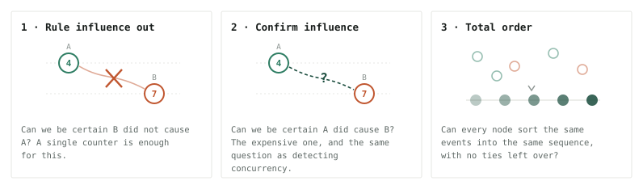
It is worth keeping these three apart, because no design gives you all of them for free. Each clock we look at answers some of them and leaves the others on the table, and what you pay for the ones you get is usually space in the timestamp.
There is also a fourth thing we should be clear about not getting, because none of the designs below will provide it. All three questions are about relating events you already hold. None of them let you order events as they arrive. A node sitting on a timestamp of [2,3,4] can still be handed a [1,0,0] an hour later, and nothing in either timestamp says whether something older is still travelling towards it. Any ordering you publish is therefore provisional until you have some separate reason to believe you have seen everything, and that reason has to come from acknowledgements or heartbeats or a stability protocol, not from the timestamps. Every design in this post has that limitation, and none of them removes it.
The Lamport clock
Let's start with the simplest design, the Lamport clock. A Lamport clock does not give us a total order over events, and it cannot tell us whether two events were concurrent. What it gives us is one narrow check, and a fairly trivial one: it lets us rule out that a particular event caused another.
The mechanism is small. Every node keeps a single counter that starts at zero. Whenever a node does something locally, it increments its counter by one and stamps the event with the new value. When it sends a message, it attaches its current counter to that message. When it receives one, it sets its counter to whichever is larger, its own value or the value carried on the message, and then increments by one. That last step matters, because a node that is already ahead of the sender must not move backwards.
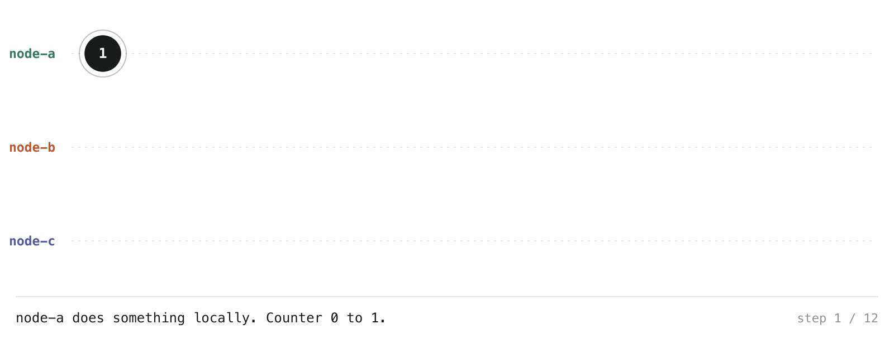
What this buys us is a guarantee in one direction. If event A caused event B, then B's timestamp is always strictly greater than A's. A chain of causality can never leave two events holding the same number, because every step along that chain increments the counter at least once.
The trouble is that the reverse does not hold. If you are handed two timestamps and see 4 and 7, you cannot conclude that the first event caused the second. The node that produced 7 may simply have been busier, or it may have absorbed a high count from a third node that the first one never spoke to. So seeing that A's timestamp is smaller than B's tells you only that B did not cause A. That is the whole of it. It never tells you that A caused B.
Concurrency under a Lamport clock
There is one case a Lamport clock answers with complete certainty, and we should isolate it before moving on. If two events carry exactly the same timestamp, they are always concurrent.
The proof is short. Suppose A caused B. Every step along a causal chain increments a counter at least once, so B's timestamp would have to be strictly greater than A's. Now suppose the reverse, that B caused A. By the same argument A's timestamp would have to be strictly greater than B's. Both of those contradict the timestamps being equal. So if the two numbers match, no causal chain can exist in either direction, which is exactly what it means for two events to be concurrent.
Notice carefully which way that statement runs, because it is easy to read it backwards. Concurrent events do not need to have matching timestamps. It is only the other direction that holds: matching timestamps prove concurrency. In practice most concurrent pairs carry different numbers, and when they do the clock has nothing to say about them at all.
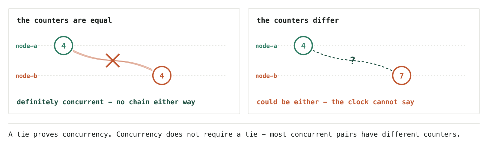
So a tie is a small island of certainty in a design that is otherwise silent about causality. It is also, frustratingly, the case we least need answered. What we actually want to know is whether the events with different numbers influenced each other, and that is the question the whole design cannot reach.
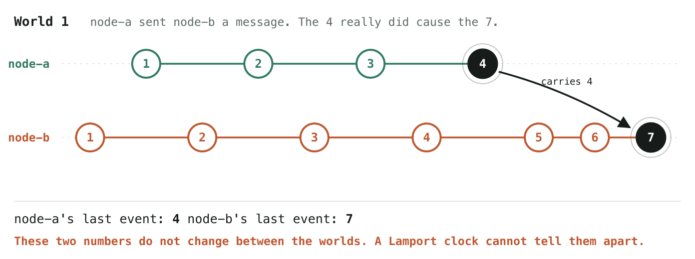
The Lamport Origin clock
If you look carefully at what we just did, we only answered one of our three questions. We can now rule influence out, which was the first and weakest of them. We still have no way to confirm influence, and we still have no agreed ordering of events. Two of the three are untouched.
Of the two that remain, the ordering question is by far the easier one, so we will take that first. And the fix really is a hack rather than an insight. The problem with a bare Lamport timestamp is that two nodes can independently arrive at the same number, and when they do, nothing in the timestamp says which of them to put first. So we give the timestamp a second field: the id of the node that produced it. A timestamp stops being 4 and becomes [a, 4]. To order any two events you compare their counters, and if the counters happen to be equal you compare their node ids instead. Ties can no longer happen, because no two events on the same node ever share a counter.
Take the same run as before. Twelve events across three nodes, now stamped with their node id, sorted by counter first and node id second.
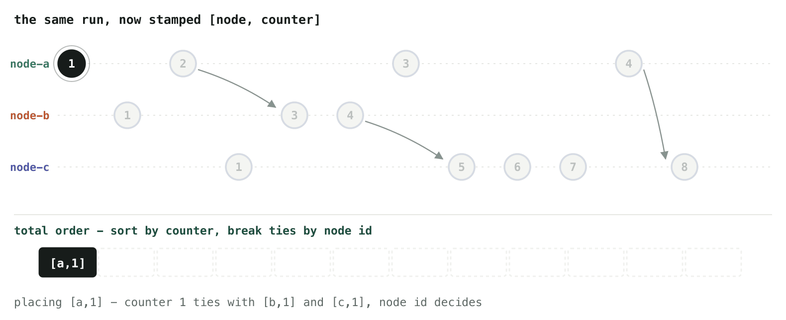
The result is a single sequence that every node in the system will agree on:
[a,1] [b,1] [c,1] [a,2] [a,3] [b,3] [a,4] [b,4] [c,5] [c,6] [c,7] [c,8]
Notice how much of that sequence was decided by the tiebreak rather than by anything that happened. Three events all carry the counter 1, two carry 3, and two carry 4. That is seven of the twelve events whose position was settled by the alphabet.
This ordering is also guaranteed to be consistent with causality, and that guarantee comes for free from the previous section. We already know that if one event caused another, the second carries a strictly larger counter. Sorting by counter therefore never places an effect before its cause, and the node id only ever gets consulted when the counters are equal, which we know means the two events could not have influenced each other. So the sequence above is a valid history. It is one of the orders the run could have produced.
Be precise about what we have bought, because it is easy to overstate. We have bought agreement, not truth. Every node sorting this set of timestamps lands on the same sequence, which is genuinely useful: it is what lets a set of replicas apply the same operations in the same order and end up in the same state. What we have not bought is any claim that this is the order things really happened in. Node a's first event did not actually precede node b's first event. Those two events were concurrent, and we ordered them by name because we needed some rule and any rule would do.
In fact the arbitrariness runs deeper than the ties. Any two concurrent events get ordered by this scheme, whether their counters are equal or not, and the ordering is equally meaningless in both cases. The node id fixes the narrower problem that two people sorting the same events could otherwise disagree with each other. It does not, and cannot, tell you which concurrent event came first, because there is no answer to that question.
So the Origin clock closes the third question and leaves the second exactly where it was. Given [a, 4] and [b, 7] we still cannot say whether the first influenced the second or whether the two nodes never spoke. The timestamp is one field larger and answers no new questions about causality. That is the problem the next design has to solve, and unlike this one, it will cost us something real.
The vector clock
Look at what has actually been going wrong. We have been trying to relate two nodes through a single shared convention of time, while neither node knows anything about where the other one has been. A counter of 7 tells you how much work its own node has done and nothing whatsoever about the other nodes in the system. So when two of these numbers meet, there is simply no information available to say whether one of them was built on top of the other.
Once you put it that way the fix suggests itself. If a node is going to reason about another node's history, it has to carry some record of that history. So instead of one counter, each node keeps a position for every node in the system, including itself. That is O(n) storage per timestamp rather than O(1), and that cost is the entire trade. It is also exactly how we arrive at a vector clock.
The algorithm is barely more complicated than before. Every node starts at [0, 0, 0], one slot per node. When a node does something on its own, it increments its own slot and leaves the others untouched, because nothing it just did tells it anything new about anyone else. When it sends a message, the whole vector goes along for the ride. When it receives one, it takes the element-wise maximum of its own vector and the one that arrived, and then increments its own slot. The maximum is doing the same job the maximum did in the Lamport clock, just per node rather than once: for every slot, keep whichever side knew more.
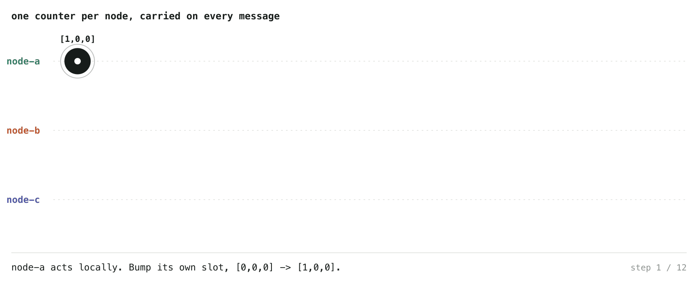
What we have bought becomes clear as soon as you compare two of these. Because each slot records how much of a given node's history is baked into this event, the vector is a record of what an event has consumed. And if every slot of one vector is greater than or equal to the matching slot of another, and the two are not identical, then the first event knows everything the second one knew, and more besides. That can only have happened if information travelled from the second to the first. So we can now answer the question that defeated the Lamport clock. We can look at two timestamps and say, with certainty, that one caused the other.
Concurrency under a vector clock
The same reasoning also tells us when two events did not influence each other, and it is the natural extension of the tie argument from the Lamport section. There, matching timestamps proved that neither event could have reached the other. Here, the equivalent condition is that neither vector dominates the other: node A's vector is not less than or equal to node B's, and node B's is not less than or equal to node A's. Each side is ahead somewhere, which means each holds knowledge the other has never seen, which means no message can have travelled between them in either direction. They are concurrent.
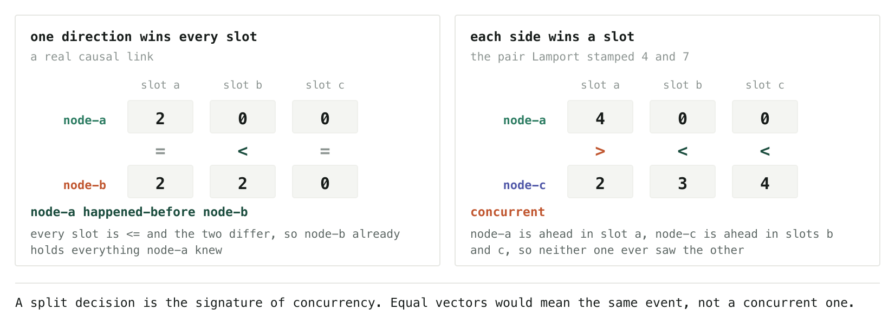
One difference from the Lamport case needs flagging, because the tie rule does not carry over unchanged. Under a Lamport clock, equal timestamps meant concurrent. Under a vector clock, two genuinely identical vectors would mean the same event, since no two distinct events can produce the same vector. Concurrency here shows up as a split decision, where each side wins at least one slot. It is the same underlying idea, expressed in the richer thing we are now carrying.
The example on the right of that diagram is the pair we could not resolve earlier. Those are the two events the Lamport clock stamped 4 and 7, and the vectors settle immediately what a bare 4 and 7 never could: node-a is ahead in its own slot, node-c is ahead in the other two, so the two never spoke. The 7 was larger only because node-c had been busier.
That leaves the ordering question, and here we can reuse the same hack as before. Sum the entries of each vector and sort by that total, breaking ties by node id. The sum works as a sort key for a concrete reason: if one event happened before another, every slot of its vector is smaller or equal and at least one is strictly smaller, so its total is strictly smaller too. Sorting by the sum can therefore never place an effect before its cause, and the node id only gets consulted when two totals are equal, which we know means the events were concurrent.
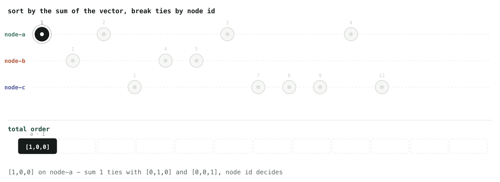
With that, all three of our questions are answered. We can rule influence out, we can confirm it, and we can produce an order every node agrees on. The last of those carries the same caveat it did with the Origin clock: sorting concurrent events by a number and then a name gives us agreement rather than truth, because there was never a real answer to which of them came first.
What we paid is a timestamp that grows with the size of the system. Every message now carries one integer per node, forever, and adding or removing nodes turns into a question about what to do with their slots.
It helps to put numbers on that. With five replicas and an eight-byte counter each, a timestamp is forty bytes, which is a rounding error next to most values. At a hundred nodes it is eight hundred bytes, and now the timestamp is very likely larger than the thing it describes. That is the shape of the cost: negligible at small n, and quietly dominant at large n. The whole of the rest of this subject is about clawing some of it back.
The dotted vector clock
The vector clock answers all three of our questions. What is left is the cost of asking. Every comparison walks the whole tuple: slot a against slot a, slot b against slot b, and onward until the verdict is settled. That is O(n) work per comparison, on a structure we already pay O(n) to store, and in a system that compares timestamps constantly it adds up.
We can make that comparison constant time without giving anything up, and the idea is already sitting in the proof we used for causality. An event is the newest thing it knows about. Knowing an event means knowing everything behind it. Put those together and one fact is enough: if node B has seen node A's most recent event, B has seen everything that came before it too, so A happened before B. The other slots cannot disagree, so there is no reason to read them.
This is a change of representation, and the algorithm underneath stays where it was. Split the timestamp in two. Keep the vector, but let it record only what the event had seen before it happened, and store the event's own identity separately as a pair of node and count. That pair is the dot.
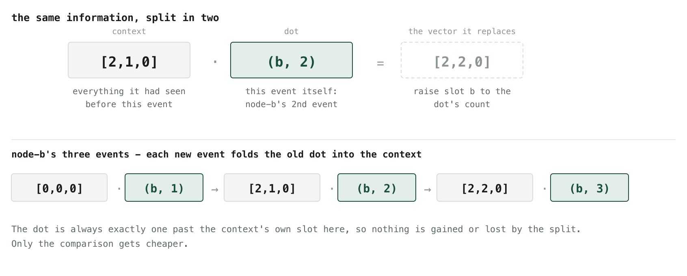
The update rule follows from that picture. Each time a node generates a new event, its previous dot is absorbed into the context and the new event becomes the dot. Nothing is lost in the split, because in a vector clock the dot always sits exactly one past the context's own slot, and you can fold it back to recover the original vector whenever you want.
Here is the same run again, now with both halves on every event.
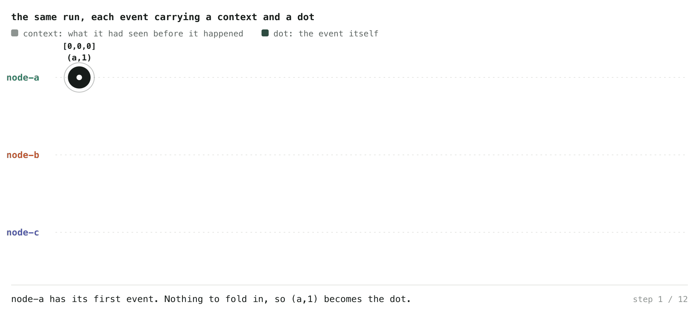
Watch node-b. Its first event has an empty context and the dot (b,1). When the message from node-a arrives, the context jumps to [2,1,0], which is the max of what node-b already had and what came in, and the dot becomes (b,2). At its next event that dot folds into the context, giving [2,2,0], and (b,3) takes its place. The dot is always the newest thing; the context is everything the node had before it.
The payoff is the comparison. To ask whether one event happened before another, take the first event's dot, look up that node's slot in the second event's context, and compare two numbers. One lookup, however many nodes there are.
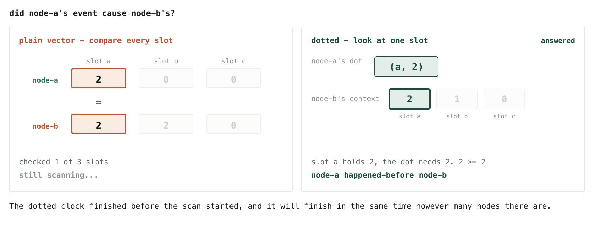
Concurrency falls out of the same test. If the first lookup fails, that only rules out one direction, so you check the other way round: take the second event's dot and look it up in the first event's context. If that fails too, then neither event has seen the other and the two are concurrent. Two lookups at worst, and the answer never depends on the size of the system.
Be careful about what the word optimisation is covering here. The storage has not changed at all. The context is still a full vector, every message still carries one entry per node, and adding a node still widens every timestamp in the system. We have reorganised the same bytes so that the question we ask most often can be answered without reading most of them. O(n) to store, O(1) to compare.
One more thing is hiding in this representation, though it stays invisible while we are only talking about clocks. Here the dot always sits contiguous with its context, one step past the node's own slot, which is what makes the split purely cosmetic. Once we move from timestamping events to versioning stored data, that stops being true. The dot can detach from the context, and when it does it expresses something a vector has no way to hold. That is where the next section starts.
Version vectors
A version vector is a vector clock with a narrower job. The maths is identical, the comparison rule is identical, and everything we proved about causality and concurrency carries over untouched. What changes is what the counters count.
A vector clock tracks a node. A node does a great many things: it serves reads, it writes to hundreds of different keys, it runs background work, and every one of those events ticks the clock. A version vector tracks a single stored object instead. Its slots belong to the replicas holding that object, and a slot only moves when a replica writes to that particular object. Reads do not move it. Writes to other keys do not move it. Time passing does not move it.
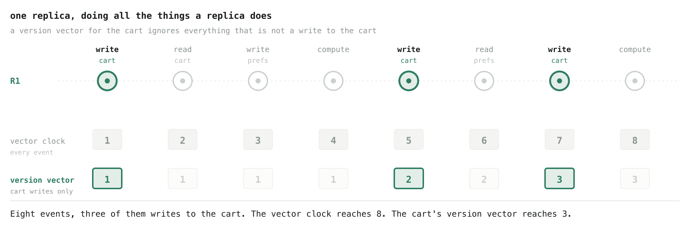
That narrowing is what makes the idea practical. A vector clock grows with everything a node has ever done, which is fine for reasoning about a running system but hopeless as something to store. A version vector for one shopping cart counts only the writes to that cart, so it stays small enough to sit beside the value in the database, one per key, for millions of keys.
And the question it answers is the one a replicated store actually has to ask. Not "which of these events came first" but "these two copies of the same key disagree, so is one of them simply out of date, or did they genuinely diverge?" That is the causality question wearing different clothes, and we already know how to answer it.
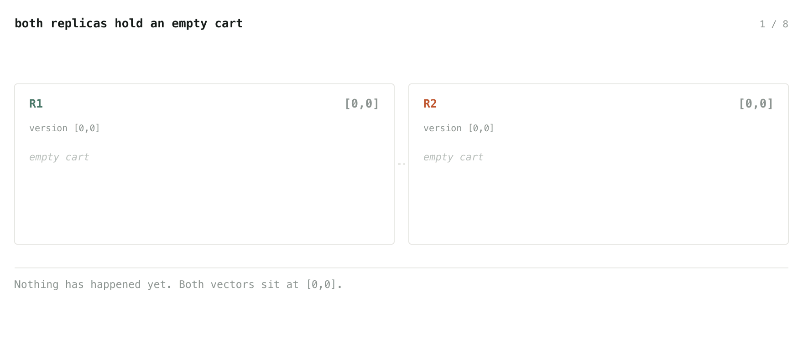
There are only four possible outcomes when two replicas compare notes. The vectors match, and there is nothing to do. One is less than or equal to the other in every slot, which makes it an ancestor, so it is discarded and the newer value adopted. The mirror case, where the other side is the ancestor. Or each side is ahead in some slot, which means neither has seen the other, and the store has no basis for choosing. In that last case it keeps both versions as siblings and hands them to the application.
Merging is worth doing carefully. The merged version's vector is the element-wise max of the siblings it replaces, which already makes it a strict descendant of all of them, since each sibling was ahead somewhere and the max beats every one of them in that slot. The resolving replica then bumps its own slot as well, not to gain domination but to give this particular merge an identity. Two replicas could merge the same pair of siblings into different values, and without the bump both would land on the same vector while their contents disagreed. Once the merge propagates, the old siblings prune away as ancestors and the conflict is gone for good.
Where a version vector breaks
Everything above assumes the two conflicting writes landed on different replicas. When they land on the same one, a plain version vector fails, and it fails silently.
Picture a cart on replica R1 at [1,0] holding Milk. Alice reads it. A moment later Bob reads it too. Neither has seen anything the other did, because at the moment they both read, neither had done anything. Alice adds Eggs and her write arrives, so R1 bumps to [2,0]. Bob adds Bread and his write arrives, so R1 bumps to [3,0]. Now compare those two versions. Every slot of [2,0] is less than or equal to [3,0], so Alice's version reads as an ancestor and gets deleted. The Eggs vanish, and nothing in the system registers that anything went wrong.
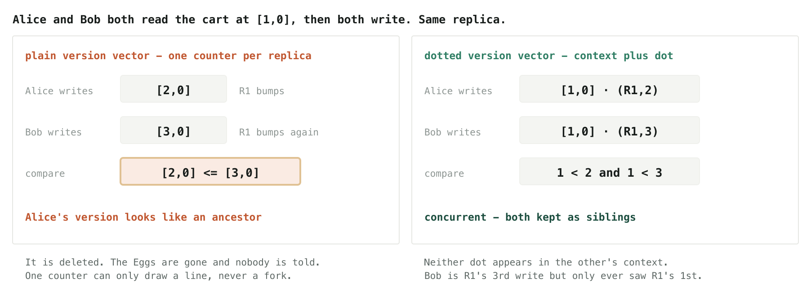
The failure is structural. R1 has one counter for this key, and bumping a single counter twice produces 2 and then 3, which the comparison reads as "the second was built on the first." Two clients writing the same replica without seeing each other is a fork, and a single counter can only draw a line.
Two fixes suggest themselves and both are bad. Give every client its own slot, and concurrent client writes separate correctly, but the vector then grows with the number of clients that have ever touched the key and never shrinks, because removing a slot risks claiming you saw something you did not. Keep slots on replicas and accept the loss, and the vector stays small while customer data quietly disappears.
The fix that works is the dot from the previous section. Give each stored version a context, which is the version vector the client held when it read, and a dot, which names that specific write as a pair of replica and count. Alice's write becomes [1,0] with the dot (R1,2). Bob's becomes [1,0] with the dot (R1,3). Ask whether Alice's write is inside what Bob had seen: her dot needs slot R1 to hold at least 2, and Bob's context holds 1. Ask the reverse and get the same answer. Neither saw the other, so both survive as siblings, and the slots are still per replica.
Look closely at Bob's record, because it is the thing a plain vector could never express. His dot says he is R1's third write, while his context says he had only ever seen R1's first. There is a hole where the second one should be, and that hole is Alice's write. In the dotted vector clock the dot always sat one step past its context, which is why the split was cosmetic there. Here it can detach, and the gap it leaves behind is exactly the record of a write made in ignorance of another.
That is the whole progression. We started with a counter that could only rule causality out, and finished with a pair of structures that can detect a conflict between two shopping carts on two machines that have never spoken, without either of them knowing what time it is.
What each design buys
One problem, three questions, and six designs that answer different subsets of them at different prices.
| Design | Rule influence out | Confirm influence | Agreed order | Order in real time | Size / compare |
|---|---|---|---|---|---|
| Lamport clock | yes | no | no | no | O(1) / O(1) |
| Lamport Origin clock | yes | no | yes | no | O(1) / O(1) |
| Vector clock | yes | yes | with a sort key | no | O(n) / O(n) |
| Dotted vector clock | yes | yes | with a sort key | no | O(n) / O(1) |
| Version vector | yes | yes | not asked | no | O(replicas) / O(replicas) |
| Dotted version vector | yes | yes | not asked | no | O(replicas) / O(1) |
A few things fall out of that table that are hard to see while reading the sections one at a time.
The first question is nearly free. A single counter answers it, and no design after the Lamport clock improves on that answer, because there is nothing left to improve.
The second question is where all the money goes. Confirming influence means recording the shape of what happened, and that shape branches, so it cannot be squeezed into one number. Every design that answers it pays a slot per participant, and the two dotted variants are attempts to make that payment hurt less at read time rather than to reduce it.
The third question is never really answered. It is patched, twice, with the same patch. Order by something monotone, break the remaining ties by node id, and accept that concurrent events end up sequenced by their names. That patch is available to every design in the table and means the same thing in each of them: agreement, not truth.
And the real-time column is entirely negative, which is the part worth carrying away. Not one of these clocks can tell you whether something older is still in flight. They order history; they do not order the present.
Underneath all of it is a single fact about shape. A counter can only encode a chain, and causality in a distributed system is a partial order with branches in it. Everything after the Lamport clock is a decision about whether to pay for the branching, fake it with a tiebreak, or recompute it on demand.
Recommended reads
Leslie Lamport, Time, Clocks, and the Ordering of Events in a Distributed System (1978). Eight pages, and the source of most of what is above. The happens-before relation and the two clock rules are settled in the first few, and the trick of breaking ties with a node id is Lamport's own rather than a later patch. Two parts repay reading even once you know the mechanism. He shows that a total order built this way can contradict the order people outside the system actually observed, which is the point about agreement rather than truth, put more sharply than I have put it here. And the back half turns to physical clocks and derives a bound on how far apart they can drift, which is the problem this post opened with.
Clocks and Causality, by ex hypothesi. A survey of the designs, and the piece this post grew out of. It also covers one design left out here: the Lamport causal clock, which keeps causality answerable in constant space by storing a back-pointer to the causing event and walking the chain when a question is asked. It trades storage for work at read time, which is the opposite bargain to the one the vector clock makes.